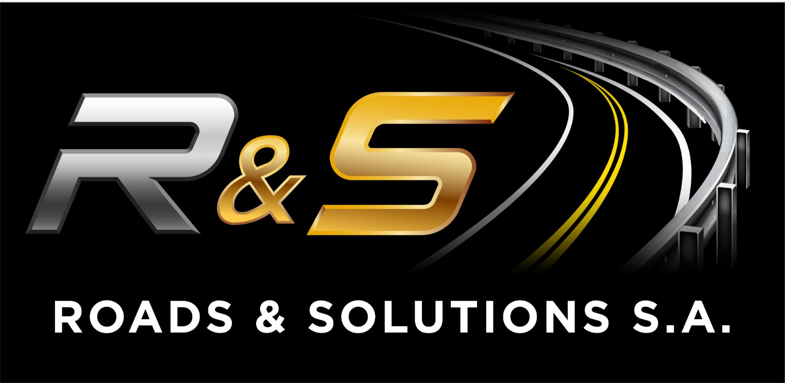

Seguridad primero
Instalaciones, señalización y procesos pensados para reducir riesgo operativo y vial.

Flex Beam, señalización, demarcación y mezcla asfáltica
Roads & Solutions S.A. atiende proyectos públicos, privados e industriales con instalación de baranda Flex Beam, señalización vertical y horizontal, demarcación vial, apoyo en cierres de obra y colocación de base y mezcla asfáltica en Costa Rica.
Somos una empresa costarricense fundada en 2018 para ofrecer servicios viales especializados, seguros y medibles. Nuestro trabajo combina experiencia técnica, control de campo y una comunicación clara desde la visita inicial hasta la entrega.
Nos concentramos en cuatro frentes de alto impacto: sistemas de contención Flex Beam, señalización vial, demarcación y control temporal de tránsito, y colocación de base con mezcla asfáltica.
Instalaciones, señalización y procesos pensados para reducir riesgo operativo y vial.
Levantamos información clave para cotizar con criterio y evitar improvisaciones en obra.
Atendemos proyectos en diferentes zonas de Costa Rica con cuadrillas, supervisión y control de calidad.
Catálogo de servicios
Suministro e instalación de sistema de contención vehicular tipo Flex Beam para bordes de calzada, curvas, puentes, accesos y zonas de riesgo.
Implementación de dispositivos y marcas viales para regular, advertir, guiar y ordenar el tránsito en proyectos nuevos o existentes.
Demarcación y apoyo operativo para cierres temporales, desvíos, zonas de trabajo y control seguro de flujo vehicular o peatonal.
Colocación de base granular y mezcla asfáltica para accesos, parqueos, vías internas, reparaciones y superficies de circulación.
Método de trabajo
Recibimos datos del proyecto, ubicación, alcance y prioridad.
Analizamos servicio requerido, cantidades, superficie, seguridad vial y logística.
Preparamos una propuesta clara con alcance, condiciones y tiempos.
Coordinamos cuadrillas, herramientas técnicas y supervisión de campo.
Proyectos en cada rincón del país
El sitio nuevo está preparado para incorporar galería real, antes/después, fichas de proyecto, ubicaciones, categorías y resultados técnicos cuando el equipo confirme el material fotográfico final.
Excelente trabajo, seguimiento claro y entrega profesional.
Cliente de obra vial
Respuesta rápida y equipo adecuado para resolver en campo.
Proyecto privado
Documentos comerciales
Deck ejecutivo para el Agente de Ventas con narrativa, servicios, costos, cronograma y cierre comercial.
02Desglose de inversión única, mensualidades, plataformas, fuentes oficiales y recuperación comercial.
03Modelo de negocio para aumentar ventas en Costa Rica y preparar expansión hacia Centroamérica.
Cotizaciones
Complete la información clave y el equipo comercial puede dar seguimiento con una cotización ajustada a la necesidad real de la obra.
Preguntas frecuentes
Puede completar el formulario del sitio, llamar o escribir al correo comercial. Entre más datos incluya, más precisa será la propuesta.
La atención comercial se maneja de lunes a viernes en horario laboral y sábados al mediodía. Las solicitudes web pueden quedar registradas en cualquier momento.
Metros lineales de baranda, cantidad de señales, metros cuadrados de demarcación, área asfáltica, ubicación, estado de la vía y fecha requerida.
Sí. El apoyo se revisa según flujo vehicular, horario, zona de trabajo, señalización temporal requerida y condiciones de seguridad del proyecto.